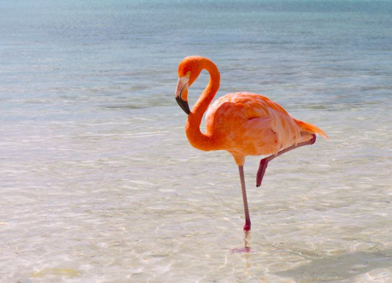

Птахи
Цікаві факти
Автор: Оля Добей
казуар
Найнебезпечніший птах на Землі. Зазвичай птах досить спокійний, однак якщо його потривожити, він може завдати небезпечного удару своїми потужними ногами. Ноги казуара мають величезні кігті, які здатні вбити людину з одного удару.
Африканський страус
Найбільшим птах, висота якого сягає 2,7 м, з масою тіла до 156 кілограм.
мандрівний альбатрос
Найбільший розмах крил серед нині живих птахів має мандрівний альбатрос до 325 см
Сови
Сови не можуть рухати очима, замість цього вони повертають голову до 270° без шкоди для здоров'я.
сірий папуга

Найбільш балакучим птахом вважається жако (сірий папуга). В середньому він може запам'ятати понад 1500 слів.
Фламінго

Фламінго, лелеки та інші довгоногі птахи стоять на одній нозі, щоб максимально зменшити втрату тепла при вітрі.
Горобець
Відомі пам'ятники горобцеві, створені людиною в знак подяки за допомогу з боку цієї птиці в боротьбі проти комах-шкідників. Перший такий пам'ятник був споруджений в середині 19 століття в Бостоні.